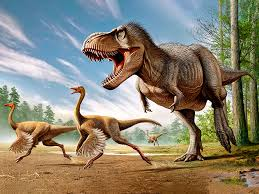

About Dinosaurs
Their history
Dinosaurs are a diverse group of reptiles of the clade Dinosauria.
Dinosaurs are a diverse group of reptiles[note 1] of the clade Dinosauria. They first appeared during the Triassic period, between 243 and 233.23 million years ago, although the exact origin and timing of the evolution of dinosaurs is the subject of active research.
They became the dominant terrestrial vertebrates after the Triassic–Jurassic extinction event 201.3 million years ago; their dominance continued through the Jurassic and Cretaceous periods
They became the dominant terrestrial vertebrates after the Triassic–Jurassic extinction event 201.3 million years ago; their dominance continued through the Jurassic and Cretaceous periods
People Love dinosaurs!
Dinosaurs are a varied group of animals from taxonomic, morphological and ecological standpoints. Birds, at over 10,000 living species, are the most diverse group of vertebrates besides perciform fish
Dinosaurs are a varied group of animals from taxonomic, morphological and ecological standpoints. Birds, at over 10,000 living species, are the most diverse group of vertebrates besides perciform fish
Dinosaurs are a varied group of animals from taxonomic, morphological and ecological standpoints. Birds, at over 10,000 living species, are the most diverse group of vertebrates besides perciform fish